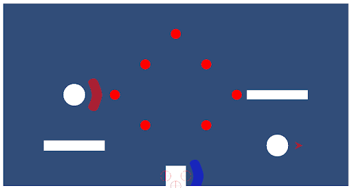
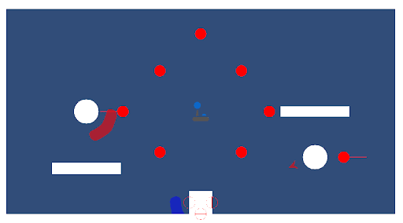
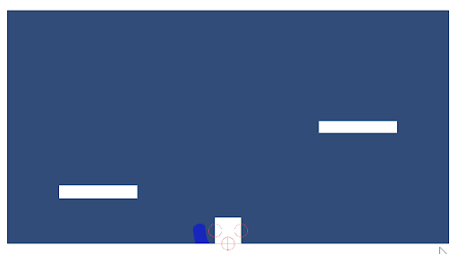
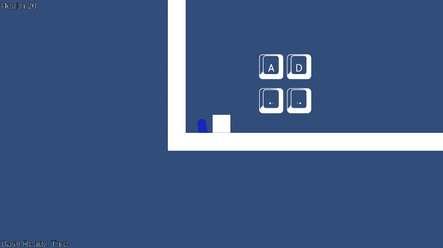
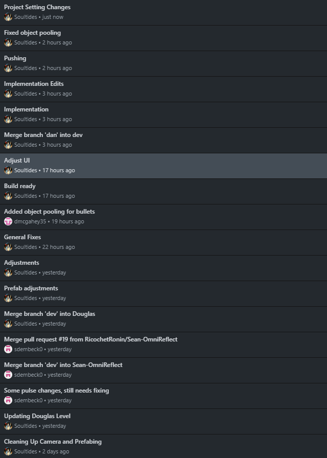

Douglas Ngo
Weekly PPJ Entries for Ricochet Ronin
PPJ 01
Tasks:
Set Up Times for Sprint Planning Meetings throughout the week (Took a day for everyone to get their
times in)
Set Up Discord (took me about an hour to set up all the channels, invite everyone, and post initial
messages) (1 hr)
Introductions about experience and role on the team (2 hours for the entire team is introduce
themselves through messages in the discord, )
Met Tuesday - introductions, onboarding, One pager (1 1/2 hrs)
Started documentation for narrative aspects and one for mechanics and our timeline
Josh set up the website and got everyone on it (2hrs? Not too sure, he did it after our Tuesday
meeting)
Met Friday - finalized roles, setup the HacknPlan and got everyone on it, set up Tasks to be done by
next meeting (1 ½ hrs)
I met with Sean Saturday and we set up the Github Repo (1 hr)
Sunday - posted tech demo, finalized elevator pitch (2 hrs)
Positive:
A lot of people took initiative and it was easy to hash out task and expectations
Good communication, it's easy to get hold of one another and discuss/make decisions even with little
notice
Good ideas all round from the design side, development side, and writers
I was able to set up a lot of our organization quickly, what software we are going to be using,
everyone's roles
Negative:
We are still warming up to one another and we don't have a dedicated time reserved for working all
together
I was a little slow at commencing meetings at the Sprint Planning
Upcoming:
Writers have begun creating narrative reasonings for the mechanics as well as the setting and
characters
Designers have begun making concept art and ideas for character design and pixel art
Timeline is being created on development side
Onboarding everyone into github
Grayboxing level one
Combining the tech demo versions
Total Hours for the week: ~10 hrs
Dev, Production, Week 3, Douglas
PPJ 02
Tasks:
Fix an error with the calculations behind the deflecting (1.5 hrs)
Fix an error with infinite jumping (.5 hr)
Coordinated 2 Tuesday and 2 Friday meetings (6 hrs)
Implemented Double Jump and Wall Jump (1hr)
Coordinated Design meeting (1.5hrs)
Coordinated Development Github onboarding and Implementation Meeting (1.5 hr)
Coordinated Development TImeline meeting (1.5 hr)
Implemented Death and Reload Scene (1 hr)
Began Zone Logic (1.5 hrs)
Reflection Fix Before
Reflection Fix After
Jumping Fix Before
Jumping Fix After
Positive:
The team got the scrum pipeline down for quicker meetings, allowing us to transition into focusing on
important tasks.
Delegation went swimmingly, most people were able to finish their tasks independently and
communicate with the group about any road bumps.
I was able to hash out many of my development and production tasks quickly as well as make up for
absences on the team during the team meetings.
Negative:
I promised I would help fill a void in design but I have not been motivated to do any design tasks
yet.
I am feeling the lack of design and assets and am afraid it will be hard to achieve our unique
aesthetic without having a lot of the team transition towards design.
As narrative wraps up a lot of the writing and documentation is smoothed out, we will have people
transition towards completing design work.
Upcoming:
Concept art for the environment and architecture
Begin sprite art for environment and architecture
Finishing Zone Logic
PPJ 03
Tasks:
Develop Sprite Art Effect (2 hrs)
Tuesday Meeting (2 hrs)
Friday Meeting (½ hr)
Bug Fixes for Dylan (1 hr)
Implementation Meeting with Ryan (1 hr)
Total Hours: 6 1/2 hr
Positive:
Sprite art is looking quite good. While everyone was quite busy, we were still able to coordinate our meetings and make progress on our task even without much completion or communication.
Negative:
Very busy week, I was not able to work a lot on my tasks nor does it seem like many others were. I failed to follow up with all of those who missed Tuesday's meeting and communicate about their updated tasks.
Upcoming:
Game Mechanics GDD
Zone System
Level One Adjustments
PPJ 04
Tasks:
Friday Meeting (1 hr)
Implementation Meeting (½ hr)
Implementation Fixes: Object pooling, etc (½ hr)
Enemy activation (1 hr)
Creating working builds:
Bug fixes - PhysicsSettings, Unwanted collisions, Control scheme (1 hr)
Quality of life changes and fixes such as naming conventions and folder organization (1 hr)
Many changes github recognizes as entire file changes and does not allow merging/the files are not
easily readable to solve the conflicts
Created tutorial level (3 hrs)
Playtesting Tutorial Level (1hr)
GDD (1 hr)
PPJ (1 hr)
Total Hours: 11 hrs
Text Change Based on Controls
Tutorial

Github History Changes
Positive:
We caught up on a lot of tasks. I had more time this week to delegate towards working on the game so
I was able to iron out a lot of bugs from the playable build. We had an implementation meeting which
went well and was relatively quick, granted I did do an implementation of the dev branch beforehand
so that most likely helped.
I successfully rebalanced some of the task delegation so that team members were able to complete
tasks with higher priority.
The design team made a lot of strides this week and we are well on our way progressing there.
Negative:
I feel like the deliverables always seek up on me, as in I never realize we have more team wide
submissions that are due such as playtests being required from every team member. I am going to
start going over the weekly deliverables during class on Monday or our Tuesday meetings rather than
viewing them Friday and only giving our team the weekend to finish their deliverables.
Upcoming:
Wall Jump Fixes
Respond to Playtest Feedback
Refocus on Timeline
PPJ 05
Tasks:
Tuesday Meeting (1 hr)
Friday Meeting (1 hr)
Implementation Meeting (2 1/2 hrs)
Building and Implementing for Alpha (3 hrs)
Wall Jump “Fix” (2 hrs)
Level Design Meeting (2 hr)
Total Hours: 11 1/2 hrs
Positive:
Got an alpha build done in time.
Negative:
It cost me my soul.
Upcoming:
Wall Jump Fixes?
Continuing building levels